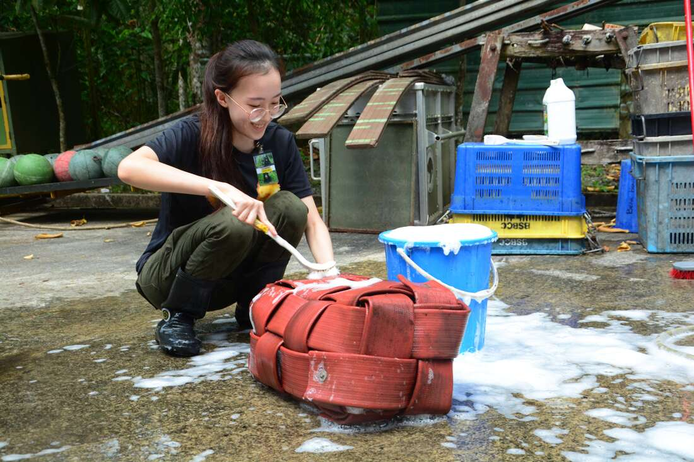
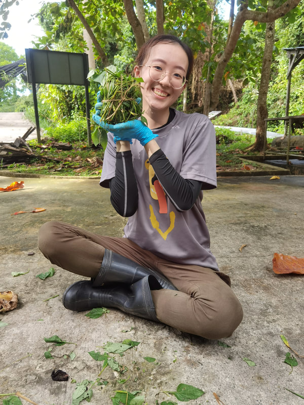

At the heart of our mission lies a unique opportunity for passionate individuals to actively contribute to the preservation of sun bears and their ecosystems.
The BSBCC Volunteer Program offers an immersive and hands-on experience for those eager to make a meaningful impact on wildlife conservation.
The volunteer program at BSBCC is designed to engage individuals from diverse backgrounds who share a common goal – to contribute directly to the well-being and conservation of sun bears.
Volunteers play a crucial role in supporting the day-to-day operations of the center, from animal care to habitat enrichment and educational outreach.
Volunteer Program
Come and join us
Activities
- Animal husbandry
- You will be assisting with cleaning cages and feeding sun bears. In order to prevent diseases, it is an essential to maintain the hygiene of the bears living environment. Daily maintenance work including daily checks on facilities and general maintenance of the centre such as weeding, electric fence voltage, painting etc. will be a part of your job as well.
- Enrichment
- To stimulate the bears and improve their living conditions, we provide various kinds of enrichments for them. Some include buying special fruits for varied diet, hiding treats around cages and in toys to stimulate foraging behaviors, providing leaves and branches in cages for nesting purposes, etc. You will be a part of designing and preparing the enrichments.
- Construction
- You may have a chance to work on small construction projects to improve the enclosures for the bears. Building new exhibits and improving current exhibits with hand-built furniture or painting are some examples of projects you may take part in.
- Education
- While having the chance of working closely with the bears, you should also learn as much about them during your stay. You may be involved with education sessions and asked to talk with school children and visitors. BSBCC has an education centre and library specific for sharing information with the public.
Duration and Cost
- 14 days (2 weeks): MYR 4,990
- 28 days (4 weeks) :MYR 9,380
- Included
- Donation to the Sun Bear Centre, accommodation, meals on working days, airport transfers, transportation to BSBCC each day, organization's t-shirts, dedicated Programme Coordinator.
- Not included
- Travel between Sandakan and country of origin (flight tickets, bus fares etc), travel insurance, visa and permit applications, personal travel on days off, personal incidentals etc.
Photo Gallery

